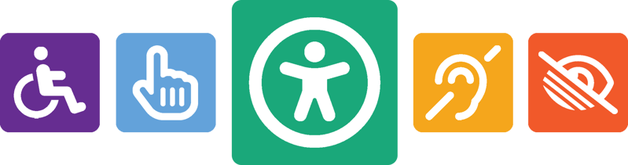
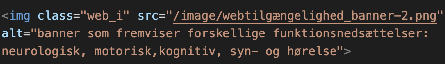
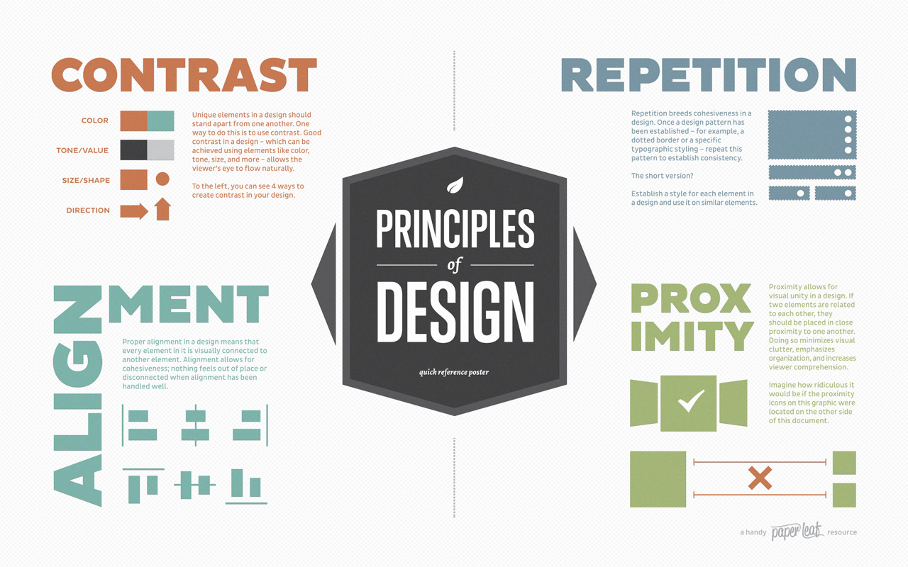
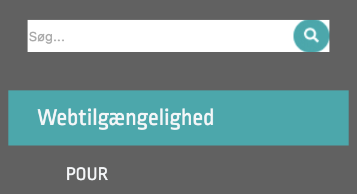
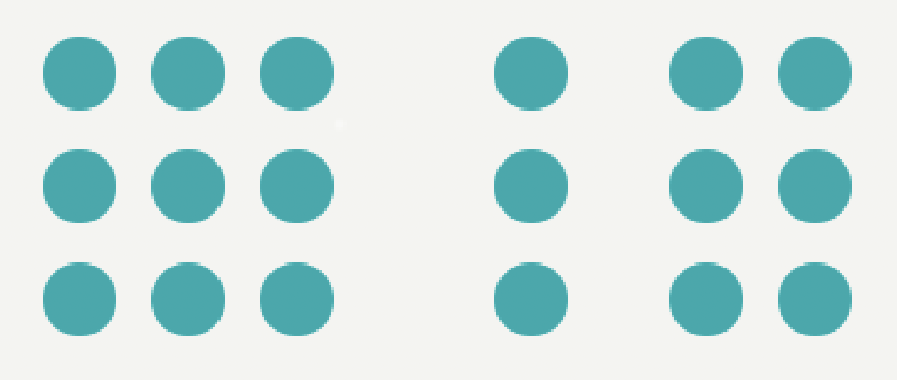
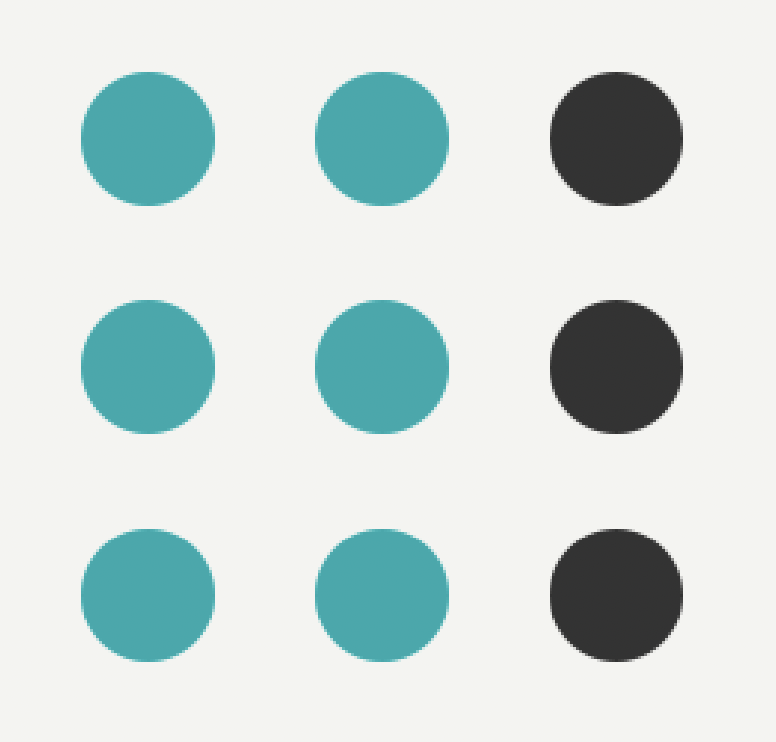
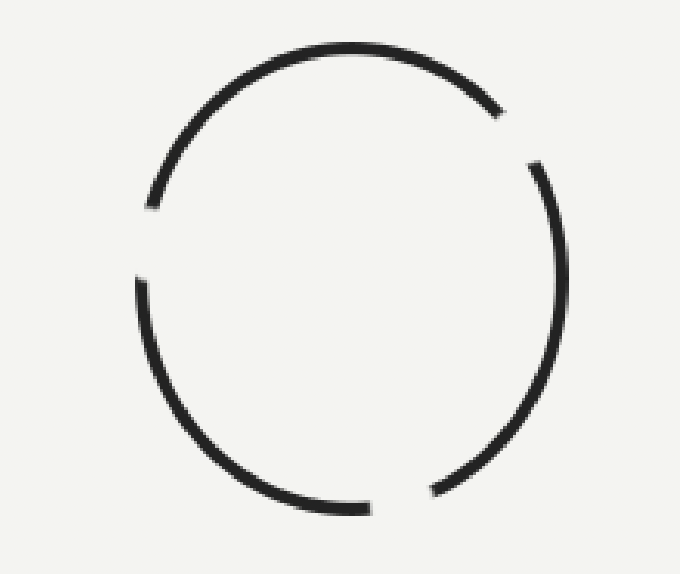
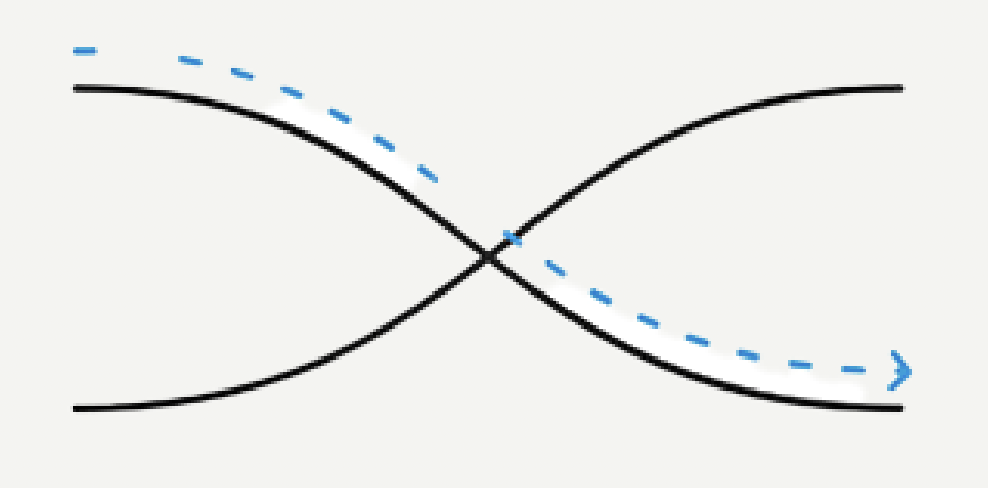
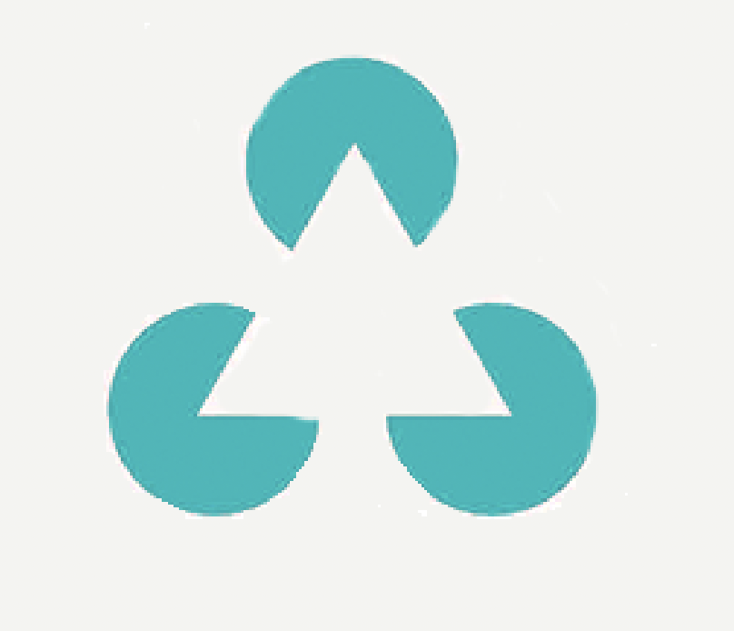

Den gode digitale oplevelse
Når man, som Danmark, er på toppen af listen over mest digitaliserede lande i Europa, bliver man også nødt til at adressere de problemstillinger, som digitaliseringen kan føre med sig. En af disse udfordringer kunne for eksempel (f.eks.) være udskiftning af fysiske buskøreplaner til et digitalt alternativ (eksempelvis en app).
I den forbindelse er det nødvendigt at have fokus på webtilgængelighed, da det ikke er alle som kan hive entelefon op ad lommen og have adgang til internettet.
Hvad er webtilgængelighed egentlig?
Helt kort, så handler webtilgængelighed om, at enhver skal kunne bruge den pågældende hjemmeside. Det vil sige, at folk uanset om de har en funktionsnedsættelse eller ej kan anvende siden.
Loven om webtilgængelighed er baseret på den internationale standard Web Content Accessibility Guidelines 2.1 (WCAG 2.1)1, som stiller krav til hjemmesider og deres tilgængelighed. WCAG har dog særligt fokus på brugere med forskellige former for funktionsnedsættelse, såsom syns-, hørelse-, motorisk- eller kognitiv nedsættelse.

Nødvendig for nogle - godt for alle
Ifølge Verdens Sundhedsorganisation (WHO)2, så har cirka 15% af verdens befolkning - eller 1 ud af 6 - en form for permanent funktionsnedsættelse, som kan have betydning for deres brug af digitale midler.
Men ved at leve op til kravene fra "Webtilgængelighedsloven", så kan man sikre sig, at folk med funktionsnedsættelse kan være en aktiv del af det digitale samfund på lige fod med andre.
Så selvom at kravene er en nødvendighed for nogle, så gavner de alle, som begår sig i den digitale verden. Udover at sikre en god oplevelse, så kan kravene også være med til at udviklere tager stilling til om hjemmesidens indhold og design er brugervenlig.
Men hvordan sikrer man sig at ens hjemmeside er tilgængelig for alle?
Det er præcis det, vi vil gennemgå på denne side.
POUR
For at ens hjemmeside overholder webtilgængelighedsloven, er der blevet opsat 4 hovedprincipper som man skal følge. De fire hovedprincipper er baseret på retningslinjerne i WCAG 2.11 og er bedre kendt under betegnelsen "POUR", som står for henholdsvis:
- Perceivable (Opfattelig)
- Operable (Operationel)
- Understandable (Forståelig)
- Robust
Under principperne er der 13 retningslinjer og dertil succeskriterier. Dog kommer vi ikke ind på alle retningslinjerne, i stedet har vi udvalgt nogle af dem, som kan ses på denne hjemmeside
![illustration af de fire hovedprincipper i pour, og hvad de hver står for. 1. Opfattelig betyder, at information og komponenter skal kunne opfattes uafhængig af om der anvendes hjælpeteknologier. 2. Anvendlig betyder, at komponenter og navigation skal kunne betjenes af hjælpeteknologier og ikke kun mus. 3. Forståelig betyder, at layout og indhold skal være opsat på en logisk og struktureret måde, så brugeren tydligt kan forstå indholdet og hvordan siden anvendes. 4. Robust betyder at hjemmesiden skal opdateres så at ny hjælpeteknologi kan bruges til aflæsning, samt med korrekt opmærkning af elementer](pour.png)
Opfattelig (Perceivable)
Din hjemmeside skal være let at forstå og opfatte uafhængig af om brugeren anvender hjælpeteknologi f.eks. i form af en skærmlæser.
Men hvordan sikrer man, at ikke-tekstbar indhold såsom, billeder og videoer er tilgængelig for brugere f.eks. med nedsat syn?
Det er simpelt nok.
Når du har indsat et billede i din html, så brug alt-attributten, som gør det muligt at komme med en alternativ beskrivelse for billedet.
Nedenstående er et eksempel fra denne side, mere præcis introduktions-afsnittet. Vi har efter billedet indsat en alt-attribut som beskriver billedet gennem en simpel tekst. Denne tekst gør det muligt for brugere med funktionsnedsættelse eller f.eks. dårlig internetadgang at tilgå samme information som andre, uden at gå klip af noget.

Operationel (Operable)
Brugergrænsefladen skal være nem at navigere og betjene med og uden hjælpeteknologi som f.eks. tastaturnavigation og undgåelse af utilsigtede handlinger.
Det skal være muligt for brugere at navigere direkte til det indhold, som vedkommende ønsker at tilgå. Dette kan gøres på flere måder, men nemmest er at vælge meningsfulde overskrifter for afsnittene, så brugeren nemt forstår hvad afsnittet handler om ud fra overskriften.
Det gøres ved brug af h1, h2, h3 og andre HTML-overskrift tags. De bruges til at definere overskrifter og strukturere indholdet hierarkisk.
- h1 anvendes til den mest betydningsfulde overskrift på siden, som i denne sides tilfælde er “Webtilgængelighed”, da det er det som hele siden omhandler.
- h2 bruges til underordnet overskrifter, der er lige under h1 i hierarkiet. Det er f.eks. “POUR” og “C.R.A.P”.
- h3 bruges til yderligere underdelinger af indhold under h2. F.eks. hvert at pour-principperne, “opfattelig”, “operational” osv.
Derudover så bruges de valgte overskrifter også i udviklingen af burgermenuen, sidebar, søgefelt og lignende. Disse gør det muligt for brugeren at springe rundt på siden og finde det ønskede afsnit.
Forståelig (Understandable)
Helt overordnet skal hjemmesiden og dets information kunne forstås og brugeren skal kunne navigere rundt på den uden problemer.
Derfor er det vigtigt at navigationen på siden er brugervenlig og forudsigelig. Det kan gøres ved at man vælger komponenter som bliver brugt på andre sider og sørger for at de opfører sig ligesom på andre sider, så det er familiært for brugeren. Plus at brugeren har en forventning om hvad der vil ske når der trykkes på dem.
Et eksempel på dette fra denne side er burgermenuen på mobilversionen og sidebaren på desktopversionen. Når der trykkes på dem, forventes der, at man bliver dirigeret rundt til det pågældende afsnit, som man har klikket på.
Det er også her, at man kan bruge :hover-effekten, så brugeren ved at du kan klikke på den. Det er et konsekvent design valg, vi har valgt på denne side i menuen.
Robust
HTML’en skal være kodet korrekt, og hjemmesiden skal generelt holde sig opdateret, så brugere med hjælpeteknologier kan tilgå og forstå hjemmesiden.
Det er derfor vigtigt at man i programmeringsfasen laver korrekt parsing, eventuelt kan man køre sin kode gennem en validator3 for at tjekke for fejl og mangler.
F.eks. hvis et HTML tag ikke er korrekt afsluttet.. Hvis dette sker, kan skærmlæsere og andre hjælpemidler ikke aflæse indholdet.
Derudover er det også vigtigt, at webløsningen fungerer på tværs af forskellige platforme, browsere og enheder, så tilgængeligheden forhøjes.
For at opsummere så er POUR bygget op omkring 4 WCAG-principper, som skal sikre webtilgængelighed for enhver. Det gøres ved at gøre information let forståelig, brug klart sprog og sikre nem betjening af hjemmesiden, samt sørge for teknologisk kompatibilitet.
C.R.A.P.
Udover at der er nogle retningslinjer fra myndighedernes side til hvordan ens hjemmeside skal opfører sig, så er der også principper og generelle retningslinjer inden for UX-design. En af disse principper er kendt under betegnelsen "CRAP", som står for:
- Contrast (Kontrast)
- Repetition
- Alignment (Centrering)
- Promximity (Nærhed)
Disse principper bruges til at forbedre brugerens oplevelse ved at skabe visuel klarhed, konsistens og effektiv kommunikation.

Kontrast
Formålet med kontrast er at skabe visuel interesse og differentiere vigtige elementer ved at få dem til at træde frem f.eks. gennem størrelse, skrifttype, farve og andre visuelle elementer.
Nedenstående eksempel kommer fra denne sides 'header' og fremviser kontrasten som er blevet skabt gennem farver. Den hvide tekstfarve mod den sorte baggrund.
Derudover så er der også brugt kontrast i forhold til tekststørrelsen variation i form af, at de vigtigste elementer såsom overskrifterne og underoverskrifter er større end brødteksten.
Repetition
Formålet med gentagelser er at skabe konsistens og genkendelighed for brugeren. "Identitetsmarkører" bruges ofte gentagne gange, såsom ikoner, farver og skrifttyper.
F.eks. så er der identitetsmarkører på både mobil-og desktop-versionen, men vi tager udgangspunkt i nedenstående grafik, som er fra mobilversionen.
Grafikken viser en klar sammenhæng mellem den turkisblå farve og vigtige elementer på siden. Det ses ved at farven vises når du hover over menupunkterne, forstørrelsesglasset ved søgefeltet og den bruges også til overskrifter og underoverskrifter på siden.

Yderligere bruges der også 2 teksttyper: Ropa Sans og Ariel, som gør det lettere for brugeren at genkende og forstå hvad der er overskrifter og hvad der er brødtekst.
Det vil sige, at brugeren genkender og forstår, hvordan forskellige dele af interfacet relaterer til hinanden.
Centrering
Formålet med centrering er at skabe orden og struktur. Hvis en hjemmeside mangler centrering, vil det få siden til at se rodet og kaotisk ud, hvilket gør det svært for brugeren at navigere rundt på siden, samt fastholde deres fokus.
Det er derfor vigtigt at justere alt med vilje. Her på siden sker det f.eks. i form af venstre-justering, som gør det nemmere at læse for brugeren. Derudover flugter overskrifterne og brødteksten med hinanden.
Nærhed
Formålet med nærhed er at organisere indholdet på en måde, som gør det nemt for brugeren at identificere, hvad der relaterer til hinanden.
Alt i alt hjælper afstand brugeren med at forstå, hvilke elementer hører sammen og forbedrer overordnet information hierarkiet.
Når man placer relaterede elementer tættere på hinanden for at signalere deres tilhørsforhold og organisatoriske sammenhæng. Hjælper brugeren med at forstå, hvilke elementer hører sammen, og forbedrer overordnet information hierarkiet.
CRAP for at undgå "crap"
Ved at forstå CRAP-principperne kan du konsekvent levere et effektivt design, uanset hvilket medie det gælder. De fire design praksisser er med til at forklare, hvordan vores hjerne organiserer visuel information og skaber meningsfulde og sammenhængende visuelle indtryk.
Gestaltlovene
Ligesom CRAP så er Gestaltlovene en række designprincipper, som har til formål at beskrive den måde vi opfatter visuelle inputs og organiserer dem, så de giver mening for os. Gestaltlovene har rødder i psykologien, men bliver den dag i dag oftest brugt som et designredskab for især digitale medier.
Nærhed
Elementer, der er tættere på hinanden, vil blive opfattet som værende relaterede og hører sammen.
Eksempelvis når du ser en liste som er punktopstillet, vil nærheden mellem hvert punkt indikerer at de er en sammenhængende liste. Det er der flere eksempler af på denne ide.
Et andet eksempel på gestalt loven om nærhed, ses nedenfor. Det er en illustration, der viser to forskellige samlinger. Den første samling opfattes som at være en gruppe, hvor cirklerne på en eller anden måde er relateret til hinanden. Den anden samling opfattes som værende to grupper, og forståes som at der er en forskel mellem dem (også selvom de ligner hinanden, da der er afstand mellem dem).

Lighed
Elementer, der deler fælles træk som form, farve eller størrelse, vil blive opfattet som værende tilhørende den samme gruppe.
Hjemmesiden er opdelt i overskrifter, underoverskrifter og brødtekst, hvor vi ved hjælp af, at anvende samme skrifttype, størrelse og farve får dem til at blive opfattet som en enhed grundet lighedsgraden.

Lukkethed
Vi - mennesker - har tendens til at se ufuldstændige figurer, som fuldstændige eller “lukkede”, så længe at elementerne er arrangeret på en måde, der antyder en sammenhæng.
Et klassisk eksempel på dette, er en ufuldstændig cirkel, som ofte vil blive opfattet som hel, så længe at åbningen er lille nok.

Kontinuitet
Elementer, som er arrangeret på en lineær måde eller i en kontinuerlig strøm, vil blive opfattet som relaterede og derfor vil vi være mere tilbøjelig til at se den som en enhed.
F.eks. en række pletter er arrangeret i en kontinuerlig linje, som vil blive opfattet som en sammenhængende enhed snarere end separate elementer.

Figur og baggrund
Vi har til tendens at opfatte objekter, som enten en central figur eller som baggrund, afhængigt af hvordan de er arrangeret i forhold til hinanden.
Nedenstående illustration fremviser 3 ufuldkommende cirkler, som via måden de er arrangret på også skaber en trekant.

I sidste ende bidrager Gestaltlovene til at optimere visuel kommunikation og design ved at tage højde for, hvordan menneskets hjerne opfatter og organiserer visuel information. De er derfor en vigtig grundsten inden for grafisk design.